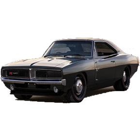
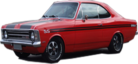
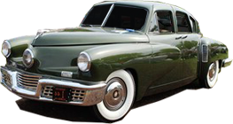
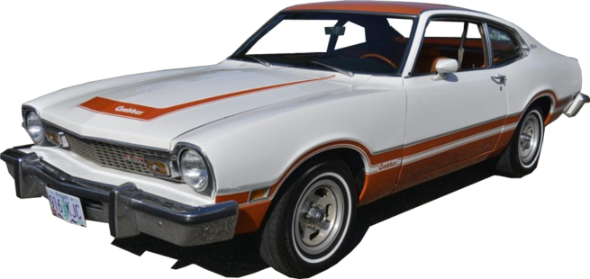
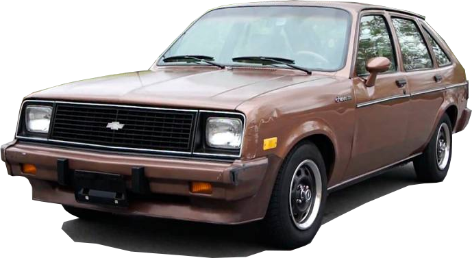

-
Dodge Charger
HP 375
Descrição
Com um peso de 1720 kgs, o Charger R/T (XS29) 1969 440 V8 Magnum 4-speed está equipado com um motor V de 8 cilindros atmosférico, a Gasolina, com o código de motor Chrysler RB-series V-8 440 Magnum. Este motor produz uma potência máxima de 380 CV às 4600 rotações e um torque máximo de 654 Nm às 3200 rotações. A potência é transmitida à estrada através de um câmbio Manual de 4 marchas, e o tipo de tração é traseira (RWD). Saiba mais
-
Chevrolet Opala
HP 138
Descrição
O Opala SS de 1974, entregava 140 cv, utilizando tuchos hidráulicos, com velocidade final real de 174 km/h e aceleração de 0 a 100 em 13,5 segundos, não era o esportivo mais rápido do mercado, ficando atrás da família Dodge Charger e Ford Maverick, mas era, o que entregava a melhor relação força e consumo em baixas e médias rotações, além de ser o modelo de melhor relação custo benefício dentro do segmento. Saiba mais
-
Tucker Torpedo
HP 164
Descrição
O Tucker 48 ou Torpedo, é um automóvel de passeio avançado para sua época, projetado pelo empresário estadunidense Preston Tucker e fabricado em Chicago no ano de 1948. Tem uma carroceria sedan de quatro portas, e foram fabricados apenas 51 unidades antes da empresa ser fechada por acusações de fraude. Saiba mais
-
Ford Maverick
HP 253
Descrição
A potência de 257 cv, suficientes para o Maverick acelerar de 0 a 100 km/h em 7,8 segundos e alcançar os 200 km/h. Avaliado em julho de 1974, o Maverick Quadrijet exigia habilidade nas arrancadas para evitar que os pneus perdessem tração. A taxa de compressão mais alta exigia o uso de gasolina azul: o consumo variava de 2,2 a 6,5 km/l. Saiba mais
-
Chevrolet Chevette
HP 67
Descrição
Com média de 73 mil veículos vendidos por ano, o Chevette tinha linhas modernas com motor de 1,4 litro e 68 cv, comando de válvulas no cabeçote e inovadores itens de segurança, como pisca-alerta e coluna de direção não-penetrante. Saiba mais